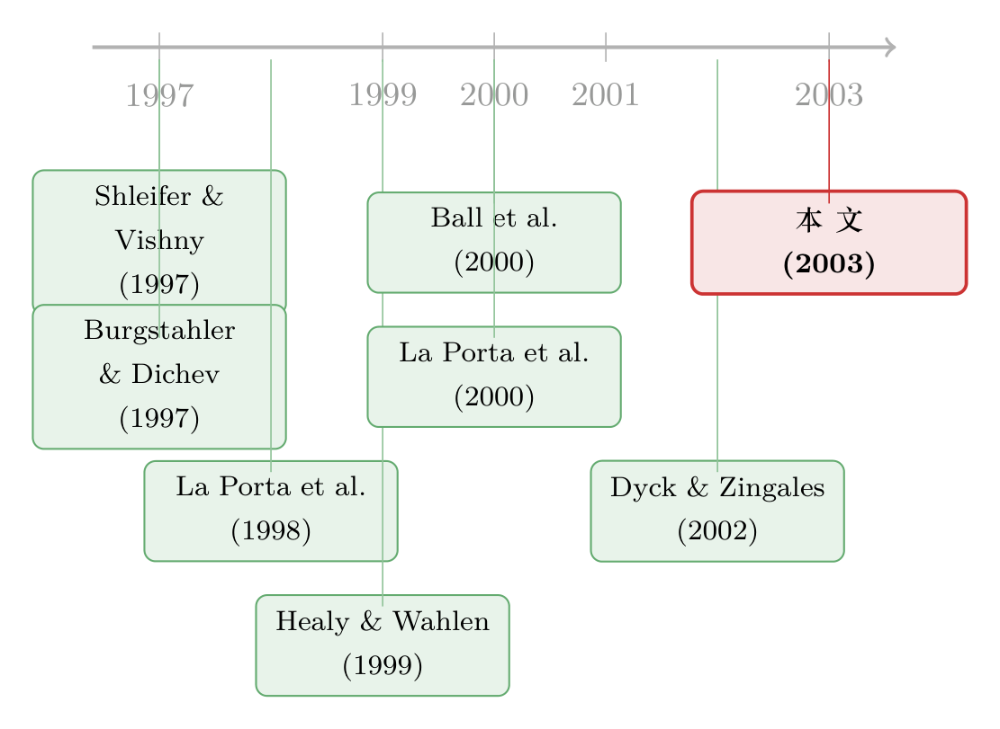

财报里的「水分」，原来是大股东在为自己打掩护
本文读的是 Leuz, Nanda & Wysocki (2003, Journal of Financial Economics)：用 31 个国家、8,616 家公司、70,955 个公司—年观测，作者发现盈余管理 (earnings management) 的普遍程度随投资者保护增强而系统性地下降。背后的故事不是「会计准则松紧」，而是内部人为了掩护自己攫取的控制权私利 (private control benefits)，才去往财报里掺水——保护越强，能藏的私利越少，掺水的动机也就越弱。
1 一个看似会计、其实是治理的问题
先抛一个观察。如果你把全世界主要经济体的上市公司财报摊开来比，会发现一件相当扎眼的事：奥地利、希腊、韩国、意大利的公司，利润曲线出奇地「平滑」——经济在波动，现金流在波动，可报出来的盈利却稳稳当当；与之相对，英美的公司，盈利的起伏几乎和现金流同步，该亏就亏，该跳就跳。
最容易想到的解释是会计准则不一样：大陆法系国家会计偏保守、英美会计偏激进，如此而已。但这个解释马上撞上一堵墙：准则是写在纸上的规则，而内部人完全可以绕开规则。同样一套准则，可以被老老实实地执行，也可以被用来系统性地操纵——所以「准则差异」既解释不了为什么操纵，也无法直接观测「实际的报告行为」。
于是一个更深的问题浮上来：跨国的盈余管理差异，到底是被什么驱动的？这篇论文给出的答案出人意料地干脆——是治理，不是会计。它把会计质量这件原本被当作「外生给定」的事，内生地接到了一国的投资者保护制度上。
2 核心逻辑：盈余管理是一块「遮羞布」
整篇文章其实只反复讲透一个机制，值得我们慢慢拆。
首先，公司里存在一对天然的利益冲突：内部人（控股股东或管理层，insiders）与外部人（中小股东、债权人，outsiders）。内部人可以利用自己的控制权为自己谋利——从在职消费，到把公司资产转移给自己或家族控制的另一家公司。这些好处只有内部人独享、不与外部人分享，作者称之为控制权私利 (private control benefits)。
接着，一个自然的问题是：内部人攫取私利，难道不怕被发现吗？当然怕。一旦外部人察觉，就会动用手里的权利来惩戒他——撤换管理层、提起诉讼、用脚投票。这正是 Zingales (1994)、Shleifer & Vishny (1997) 早就点明的逻辑。
然后，关键的一跳出现了：既然怕被发现，内部人就有动机去掩盖真实业绩。盈余管理恰恰是最趁手的工具。业绩差的时候，把利润往上调，把本该出现的亏损盖住，免得引来外部人的干预；业绩好的时候，又把利润往下压，悄悄给将来留一笔「储备」（这正是「平滑」的来源）。一来一去，报出来的盈利就比真实的经济业绩平滑得多、也好看得多。
注意这里的因果链条：内部人掺水的目的不是为了骗一个特定的会计数字，而是为了让外部人看不清公司到底发生了什么，从而看不见自己正在拿走的那部分私利。盈余管理是手段，掩护私利才是目的。
于是反转就来了：投资者保护从哪里进来？法律体系通过赋予外部人权利（罢免管理层、强制执行契约），直接压缩了内部人能攫取的私利空间（La Porta et al., 1998; Dyck & Zingales, 2002）。私利空间一旦被压缩，内部人没那么多东西需要藏了，掺水的动机自然减弱。所以这篇文章给出的可检验命题是一句反直觉但逻辑严密的话：
盈余管理随控制权私利递增，随外部投资者保护递减。
会计质量，就这样被内生地接到了治理制度上。
3 怎么「量」出看不见的盈余管理
机制讲清楚了，实证的第一道难关是：盈余管理本身是看不见的——它藏在内部人的意图里，而意图无法直接观测。作者的对策是不去猜「用了哪种手法」，而是从结果反推，并且一口气造了四个国家层面的代理变量，互相印证。
要算这些指标，得先把利润拆成两块：现金流和应计 (accruals)。后者是会计里那块可被「调节」的部分。由于很多国家并不直接披露现金流，作者沿用 Dechow, Sloan & Sweeney (1995) 的做法，用资产负债表的变化间接倒算应计：
把应计算出来之后，现金流就是「利润减去应计」。四个指标分别从两个维度切入：
第一组，盈余平滑 (earnings smoothing)。
- EM1：一国的中位数——把每家公司「经营利润的标准差」除以「经营现金流的标准差」。现金流的波动是真实经济业绩，分母做了归一；比值越小，说明利润被人为抹平得越厉害。
- EM2：一国「应计变动」与「经营现金流变动」之间的相关系数。会计上两者本就负相关，但负得越狠，越说明应计被用来给现金流冲击「打缓冲」——好年景藏利润、坏年景补利润。
第二组，会计操纵 (earnings discretion)。
- EM3：一国的中位数——|应计| / |经营现金流|。这个比值越大，说明内部人动用会计自由裁量的幅度越大。
- EM4：一国「小额盈利」公司数 / 「小额亏损」公司数。小亏（净利/总资产落在 [-0.01, 0)）很容易被内部人「调」成小盈（落在 [0, 0.01]）。比值越高，越说明大家在拼命避免报出亏损——这正是 Burgstahler & Dichev (1997)、Degeorge et al. (1999) 在美国数据里发现的「躲避亏损」。
最后，把四个指标各自给 31 国排名、再取平均，合成一个总分 (aggregate earnings management score)。作者特意做了因子分析，确认四个指标其实由单一因子驱动——也就是说，它们量的是同一件事，合成总分是站得住脚的。
4 数据与那张「触目惊心」的排名表
数据来自 Worldscope（2000 年 11 月版），样本是 1990–1999 财年、31 个国家、8,616 家非金融公司、70,955 个公司—年观测。入选门槛颇为讲究：每国至少要有 300 个公司—年观测、每家公司至少连续三年有完整报表；银行与金融机构被剔除；阿根廷、巴西、墨西哥因恶性通胀被从主样本剔除（但保留它们结论也不变）。
结果排出来后，模式干净得出奇。按总分从高到低排：奥地利（28.3）、希腊（28.3）、韩国（26.8）、葡萄牙……盘踞榜首；而澳大利亚、英国、美国则稳稳压在榜尾。具体到单个指标也彼此呼应——以 EM2 为例，希腊的应计—现金流相关系数低到 -0.928，奥地利 -0.921，韩国 -0.922，几乎是「教科书级」的平滑；EM4 上，希腊的小盈/小亏比高达 4.077、奥地利 3.563，意味着报出亏损的公司被「修」掉了一大半。
这张排名几乎完美地复制了 La Porta et al. (1997) 与 Ball, Kothari & Robin (2000) 用普通法/大陆法、以及地区特征划出来的分组。换句话说，盈余管理的版图，和「法律保护投资者」的版图，是同一张图。
作者随后做了一个描述性的国家聚类 (cluster analysis)，把 31 国按法律与制度特征归为三类：(1) 外部人经济体——股市发达、股权分散、投资者权利强、执法强（英、美）；(2) 内部人经济体但执法强——股市欠发达、股权集中、投资者权利弱、但执法强（德国、瑞典）；(3) 内部人经济体且执法弱（意大利、印度）。三类之间盈余管理差异显著：外部人 + 强执法的国家最低，内部人 + 弱执法的国家最高。
5 从相关到「证据」：回归与那块最硬的拼图
聚类只是描述。要把「私利 → 盈余管理 ← 投资者保护」这条因果链坐实，作者上了多元回归。
外部投资者保护用两件东西度量：中小股东权利（即 La Porta 系的反董事权利指数）与法律执行质量。回归结果方向清晰：盈余管理与外部人权利、与执法质量都显著负相关。更要紧的是，这个负向关系在做了以下处理后依然稳健：
- 用两阶段最小二乘 (two-stage least squares, 2SLS) 控制投资者保护的内生性；
- 控制经济发展水平、宏观稳定性、行业构成、公司特征；
- 控制各国会计准则差异（因为准则确实可能限制内部人操纵的「能力」）；
- 逐一剔除任意单一国家（尤其是美国），结论不变。
而真正把这篇文章从「漂亮的相关」推向「可信的机制」的，是那块最硬的拼图：作者拿到了控制权私利的直接度量，并证明盈余管理与内部人享有的私利水平正相关。这一步至关重要——它说明负向关系并不是「投资者保护」随便抓到的某个相关变量在起作用，而恰恰是经由「私利」这个机制在传导。控制权私利的度量，正来自 Dyck & Zingales (2002) 和 Nenova (2000) 那一脉对「投票权溢价/控制权价值」的跨国测算（关于「控制权私利到底值多少钱」这个问题本身，可参见《控制权的私利，到底值多少钱？》 与《拍卖桌上量出来的「掏空」》）。
作者很诚实地留了一个反向的尾巴：在私利水平固定不变的前提下，强保护其实可能鼓励盈余管理——因为惩罚越重，内部人越有动机把私利藏得更深（「惩罚效应」）。但实证上，这个效应被各国私利水平本身的巨大差异压倒了，所以净效果仍是负向。这是一个很关键的逻辑边界，说明结论是「平均意义」上的，而非铁律。
6 文献脉络
这条研究线的演进，几乎是一部「法律如何渗进金融」的小史。
最早，Shleifer & Vishny (1997) 的治理综述把「投资者保护」立为公司政策的核心制度变量；紧接着 La Porta, Lopez-de-Silanes, Shleifer & Vishny 的两篇奠基之作——1997 年的《Legal determinants of external finance》和 1998 年的《Law and finance》——用跨国数据证明：法律对投资者的保护，决定了一国金融市场的深度、股权的分散程度（这条「法律—金融」主线的源头之争，可参见《法律是行李，风土是地基》；它如何分流出英美与德国两种融资模式，见《为什么英国人发债，德国人却找银行？》）。
与此同时，会计这一侧也在积累弹药：Burgstahler & Dichev (1997) 和 Degeorge et al. (1999) 发现美国公司系统性地「躲避亏损」；Healy & Wahlen (1999) 给盈余管理下了一个被广泛接受的定义；Ball, Kothari & Robin (2000) 则指出制度因素会塑造会计盈利的属性，把这两条线第一次明确地接到了一起。

而本文所处的位置，是把这两条线焊死成一个内生机制：投资者保护文献此前一直把会计信息质量当作外生给定（La Porta et al., 1998 即是如此）；本文反过来论证——保护水平内生地决定了报告给外部人的财务信息质量。它和 La Porta et al. (2000) 把「投资者保护」推向更广的公司治理含义恰好同期、互为补充，也为后来 Dyck & Zingales (2002) 对私利的直接测算提供了行为层面的注脚。
7 评论与延伸（Q&A + 研究方向）
(a) 几个可能的疑问
Q：这不就是「大陆法系会计更保守」的老结论换个说法吗？
不是，而且本文专门要把这层迷雾拨开。会计准则是「纸面规则」，可以被绕开；本文的四个指标量的是公司实际的报告结果（平滑度、应计幅度、躲避亏损），而非准则本身。更关键的是，作者在回归里额外控制了各国会计准则差异，负向关系依然成立——说明起作用的是「内部人想不想藏」的动机，而不是「准则允不允许藏」的能力。
Q：四个指标会不会只是在各量各的，凑在一起没意义？
作者做了因子分析，发现四个指标由单一因子驱动，且各自的国别排名高度一致。这说明它们捕捉的是同一个底层构造，合成总分是合理的；而且文章声明，结论对「平滑类」「操纵类」分开看、以及对单因子看，都成立。
Q：投资者保护和盈余管理会不会互为因果（内生）？
这是最该担心的点。作者用 2SLS 处理投资者保护的内生性，结论稳健。但他们也坦承：制度因素往往互补地成簇出现，彼此难以完全拆开，因此「其它内生互动仍可能存在」。这是本文识别上最诚实、也最薄弱的地方——它更像「制度簇与会计行为的稳健相关 + 一个可信的机制证据」，而非教科书式的外生冲击。
Q：美国会不会一国之力带偏了整个结论？
不会。Worldscope 的美国样本只含 S&P 500 成分股，作者专门逐一剔除任意单一国家（尤其是美国）重做，结论都不变。
Q：那条「惩罚效应」会不会反过来推翻结论？
逻辑上确实存在：私利固定时，惩罚越重，内部人越想把私利藏深，反而可能增加盈余管理。但实证上，各国私利水平的巨大差异主导了一切，净效果仍是负向。这提示结论是「平均效应」，在私利已被压得很低的国家，边际上的方向可能并不确定。
Q：跨国数据里，「平滑」会不会只是反映了真实经营环境更稳定，而非操纵？
EM1已经用现金流波动做了归一，正是为了剥离「真实业绩本来就更稳」这一层；EM2进一步要求是「应计在对冲现金流冲击」。但归一无法做到完美——若某些国家的应计与现金流存在天然的会计结构性差异，仍可能被误读为操纵。这是所有「结果反推型」度量共有的软肋。
(b) 几个可能的研究问题与提案
1. 投资者保护与公司债的「信息质量溢价」。 - 【经济故事】本文证明弱保护下财报更「浑」。那么在信用市场上，弱保护国家的发行人是否要为这份不透明支付更高的利差？财报越不透明，债权人越难定价违约风险，理应索取补偿（这与《财报越「干净」，短债越便宜》的逻辑一脉相承，但要把它跨国化、并接到投资者保护上）。 - 【可行性】中。需要跨国公司债定价数据（如 TRACE 之外的国际债券库）+ 本文四个 EM 指标 + La Porta 保护指数。识别难点在于把「会计不透明」从「主权风险、宏观波动」中干净剥出，可考虑用同一发行人在不同保护环境下发债的差异。
2. 外资进入是否改变了内部人的掺水动机？ - 【经济故事】当强保护国家的机构投资者大举进入弱保护国家，他们作为「外部监督者」是否压低了当地公司的盈余管理？这把本文的「制度」机制推到了「持有人结构」层面——保护不变，但实际监督者变了（机制上呼应《外资真是「蝗虫」吗？》）。 - 【可行性】高。可用各国「可投资度 (investability)」放开的准自然实验做 DiD，处理组是被外资可买入的公司，看其 EM 指标的前后变化。数据（Worldscope + 持股库）可得，识别相对干净。
3. 跨境上市（bonding）能否把「弱保护母国」的掺水习惯改掉？ - 【经济故事】若一家弱保护国家的公司把股票挂到强保护市场（如纽约），它是否被迫「租用」了更严的法律、从而降低盈余管理？这是 bonding 假说在会计质量上的直接检验（参见《租来的法律：把股票挂到纽约，真能管住自家的老板吗？》与《租一部更严的法律，老板手里的「控制权」就贬值了》）。 - 【可行性】高。比较同一弱保护国家中「跨境上市」与「未上市」公司的 EM 指标，控制规模与行业；事件研究法可看上市前后的变化。
4. 准则趋同（IFRS 强制采用）后，治理机制是否更显形？ - 【经济故事】本文写于 IFRS 大规模强制采用之前。当准则在全球被拉齐、「会计能力」差异被抹平后，剩下的跨国盈余管理差异是否会更纯粹地由「投资者保护/私利动机」解释？这是一个检验本文机制是否「真因」的绝佳设定。 - 【可行性】中。数据充足（2005 年后 IFRS 采用国 + 控制组），但要小心：IFRS 采用本身与执法力度内生相关，需用执法质量做交互项识别。
参考文献
- Ball, R., Kothari, S., Robin, A. (2000). The effect of international institutional factors on properties of accounting earnings. Journal of Accounting and Economics 29, 1–52.
- Burgstahler, D., Dichev, I. (1997). Earnings management to avoid earnings decreases and losses. Journal of Accounting and Economics 24, 99–129.
- Dechow, P., Sloan, R., Sweeney, A. (1995). Detecting earnings management. The Accounting Review 70, 193–225.
- Degeorge, F., Patel, J., Zeckhauser, R. (1999). Earnings manipulation to exceed thresholds. Journal of Business 72, 1–33.
- Dyck, A., Zingales, L. (2002). Private benefits of control: an international comparison. NBER Working Paper 8711.
- Healy, P., Wahlen, J. (1999). A review of the earnings management literature and its implications for standard setting. Accounting Horizons 13, 365–383.
- La Porta, R., Lopez-de-Silanes, F., Shleifer, A., Vishny, R. (1997). Legal determinants of external finance. Journal of Finance 52, 1131–1150.
- La Porta, R., Lopez-de-Silanes, F., Shleifer, A., Vishny, R. (1998). Law and finance. Journal of Political Economy 106, 1113–1155.
- La Porta, R., Lopez-de-Silanes, F., Shleifer, A., Vishny, R. (2000). Investor protection and corporate governance. Journal of Financial Economics 58, 3–27.
- Leuz, C., Nanda, D., Wysocki, P. (2003). Earnings management and investor protection: an international comparison. Journal of Financial Economics 69, 505–527.
- Nenova, T. (2000). The value of corporate votes and control benefits: a cross-country analysis. Working Paper, Harvard University.
- Shleifer, A., Vishny, R. (1997). A survey of corporate governance. Journal of Finance 52, 737–783.
- Zingales, L. (1994). The value of the voting right: a study of the Milan stock exchange experience. Review of Financial Studies 7, 125–148.
我的判断。 这篇文章的贡献不在于哪一个回归系数，而在于它翻转了一个被默认外生的东西：会计信息质量不是制度的「背景」，而是制度的「产物」。它把「法律—金融」与「盈余管理」两条原本平行的文献焊在一起，并且少见地拿到了控制权私利的直接度量，让机制不止停留在叙事。对识别，我最大的保留与作者自陈一致——制度因素成簇出现、彼此互补，2SLS 也难以真正切出一个外生冲击，所以这更像「极强的稳健相关 + 可信机制」，而非因果铁证；四个「结果反推型」指标也无法完全排除「真实经营环境差异」的混淆。我接下来最想看到的，是用 IFRS 强制采用、或外资可投资度放开这类准自然实验，在准则/能力被拉齐之后，单独把「动机」这条线再验一遍——如果那时负向关系依然挺立，本文的机制才算被真正钉死。